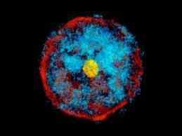
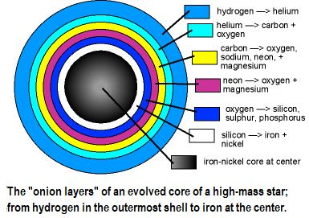
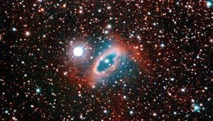
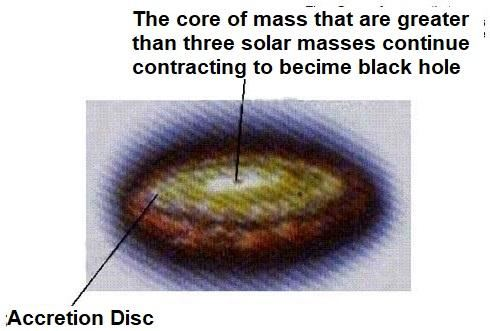
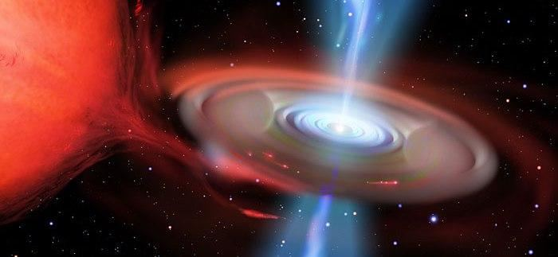
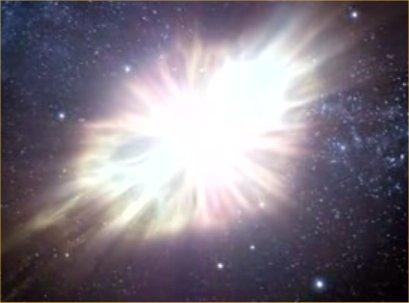
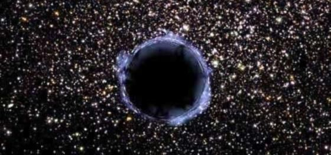
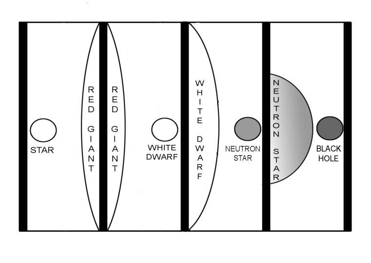

―After burning for thousands of years, the fire of hell becomes Red...‖ [Tirmizi]
"হাজার বছর জ্বলার পর জাহান্নামের আগুন লাল হয়ে যায়..." [তিরমিজি]
This part of the Hadith points out the formation of Red Giant Stars. After burning for a long time, a massive star becomes a Red Giant. In the stellar evolution, it is the end state of the first phase. The heavier element deposits below the lighter element. So, matter accumulates in a star in layers, with the heaviest in the center, and the lightest hydrogen at the surface. In the beginning of 2nd cycle, the Universe (seven- sky-universe) had enough heavier elements, at least up to silicon, to produce long lasting stars, asteroids, and dusts. However, the bulks of matter were hydrogen and helium, roughly at the ratio of 3:1. When the stars formed, the heaviest element deposited in the center and the lighter elements formed the outer layers. A star gradually contracts due to the gravitational force. So, the pressure in the center continues to increase. The increasing pressure raises the heat progressively. At one stage, the increasing pressure and temperature initiate nuclear fusion reaction. The hydrogen atoms in and around the core undergo fusion and produce more and more heat. The heat tries to expand the star. In one hand the gravity tries to squeeze the star, on the other hand the extreme heat, produced in the core, tries to expand the star—it brings a balance. A balanced star burns for millions of years and hydrogen produces helium through nuclear fusion reaction. The helium deposits on the core. Thus, the core gradually gets heavier and bigger. When it reaches to a critical mass, it starts collapsing due to its own gravity, and the outer hydrogen layer expands. The hydrogen layer, growing in many folds, stretches out into the space. This is the Red Giant State of a star. ―The shell of burning hydrogen dumps its ‗ashes‘ on to this core, building it up progressively with supplies of more and more helium. But the core with no energy sources of its own cannot grow indefinitely. When it reaches to a critical mass the center collapses and the outer layer of the star expands stretching out into space and growing in size one hundred-fold.‖ – ―The Life and Death of Stars‖ by Geoffrey Bath in The Encyclopedia of Space Travel and Astronomy edited by John Man
হাদিসের এই অংশটি রেড জায়ান্ট স্টারের গঠন নির্দেশ করে। দীর্ঘ সময়ের জন্য জ্বলার পরে, একটি বিশাল তারা একটি রেড জায়ান্ট হয়ে যায়। নাক্ষত্রিক বিবর্তনে, এটি প্রথম পর্যায়ের শেষ অবস্থা। লাইটার উপাদানের নীচে ভারী উপাদান জমা হয়। সুতরাং, পদার্থটি স্তরে স্তরে একটি নক্ষত্রে জমা হয়, যার কেন্দ্রে সবচেয়ে ভারী এবং পৃষ্ঠে সবচেয়ে হালকা হাইড্রোজেন থাকে। ২য় চক্রের শুরুতে, মহাবিশ্বে (সাত-আকাশ-মহাবিশ্ব) দীর্ঘস্থায়ী নক্ষত্র, গ্রহাণু এবং ধূলিকণা তৈরি করার জন্য অন্তত সিলিকন পর্যন্ত যথেষ্ট ভারী উপাদান ছিল। যাইহোক, পদার্থের বেশিরভাগ অংশ ছিল হাইড্রোজেন এবং হিলিয়াম, মোটামুটি 3:1 অনুপাতে। যখন নক্ষত্রগুলি গঠিত হয়েছিল, তখন সবচেয়ে ভারী উপাদানগুলি কেন্দ্রে জমা হয়েছিল এবং হালকা উপাদানগুলি বাইরের স্তরগুলি তৈরি করেছিল। একটি নক্ষত্র ধীরে ধীরে মহাকর্ষীয় বলের কারণে সংকুচিত হতে থাকে। তাই কেন্দ্রে চাপ বাড়তে থাকে। ক্রমবর্ধমান চাপ ধীরে ধীরে তাপ বাড়ায়। এক পর্যায়ে, ক্রমবর্ধমান চাপ এবং তাপমাত্রা নিউক্লিয়ার ফিউশন বিক্রিয়া শুরু করে। কোরের মধ্যে এবং চারপাশে হাইড্রোজেন পরমাণুগুলি ফিউশনের মধ্য দিয়ে যায় এবং আরও বেশি করে তাপ উৎপন্ন করে। তাপ তারাকে প্রসারিত করার চেষ্টা করে। একদিকে মাধ্যাকর্ষণ নক্ষত্রকে চেপে ধরার চেষ্টা করে, অন্যদিকে কেন্দ্রে উৎপন্ন চরম তাপ নক্ষত্রকে প্রসারিত করার চেষ্টা করে-এটি একটি ভারসাম্য আনে। একটি সুষম নক্ষত্র লক্ষ লক্ষ বছর ধরে জ্বলে এবং হাইড্রোজেন পারমাণবিক ফিউশন বিক্রিয়ার মাধ্যমে হিলিয়াম তৈরি করে। কোরে হিলিয়াম জমা হয়। এইভাবে, কোরটি ধীরে ধীরে ভারী এবং বড় হয়। যখন এটি একটি সমালোচনামূলক ভরে পৌঁছায়, এটি তার নিজস্ব মাধ্যাকর্ষণ কারণে ভেঙে পড়তে শুরু করে এবং বাইরের হাইড্রোজেন স্তরটি প্রসারিত হয়। হাইড্রোজেন স্তর, অনেক ভাঁজে বৃদ্ধি পায়, মহাকাশে প্রসারিত হয়। এটি একটি তারার রেড জায়ান্ট স্টেট। - জ্বলন্ত হাইড্রোজেনের খোসা তার 'ছাই' এই মূলে ফেলে দেয়, এটিকে ক্রমান্বয়ে আরও বেশি করে হিলিয়ামের যোগান দিয়ে তৈরি করে। কিন্তু নিজস্ব কোনো শক্তির উৎস ছাড়া মূলটি অনির্দিষ্টকালের জন্য বাড়তে পারে না। যখন এটি একটি সমালোচনামূলক ভরে পৌঁছায় তখন কেন্দ্রটি ভেঙে পড়ে এবং নক্ষত্রের বাইরের স্তরটি মহাকাশে প্রসারিত হয় এবং আকারে একশত গুণ বৃদ্ধি পায়।'' - "দ্য লাইফ অ্যান্ড ডেথ অফ স্টারস" দ্য এনসাইক্লোপিডিয়া অফ স্পেস ট্রাভেল অ্যান্ড অ্যাস্ট্রোনমি-তে জিওফ্রে বাথ লিখেছেন জন ম্যান
FIGURE 3.9: The Red Giant In a Red Giant, the outer hydrogen layer is inflated like a huge balloon, when the core is contracting. So, after burning for a long time, a star becomes a ―Red Giant‖. And, this Part of the Hadith says: ―After burning for thousands of years, the fire of hell becomes Red…‖ [Tirmizi]

চিত্র 3_9 / Figure 3_9
চিত্র 3.9: রেড জায়ান্ট একটি রেড জায়ান্টে, বাইরের হাইড্রোজেন স্তরটি একটি বিশাল বেলুনের মতো স্ফীত হয়, যখন কোরটি সংকুচিত হয়। তাই অনেকক্ষণ জ্বলার পর একটি নক্ষত্র হয়ে ওঠে ‘রেড জায়ান্ট’। এবং, হাদিসের এই অংশে বলা হয়েছে: "হাজার বছর ধরে জ্বলার পর জাহান্নামের আগুন লাল হয়ে যায়..." [তিরমিজি]
চিত্র 3_9 / Figure 3_9
Part 2 of the Hadith
হাদিসের ২য় খণ্ড
―…Again, after burning for thousands of years, it becomes white…‖ [Tirmizi]
--আবার হাজার বছর জ্বলার পর সাদা হয়ে যায়..." [তিরমিজি]
This Part of the Hadith points out the White Dwarf state. In the stellar evolution, it is the end state of the second phase. The gravitational force continues to squeeze the core of a massive Red Giant Star. It increases its pressure and density progressively. The increasing pressure and density develops heat. Eventually, the center becomes hot enough to ignite fusion reaction in the helium nuclei. The helium undergoes fusion and produces more complex elements, mainly carbon and oxygen. Carbon and oxygen being heavier than helium deposit into the layers below. The ignition of helium is only the first in a whole series. As the pressure and temperature increase in the core, the more complex nuclei are successively burnt. Carbon and oxygen burn to silicon; silicon burns to iron. Iron is the last element that can produce in the way of fusion, because elements more complex than iron, such as uranium, have tendency to undergo fission (splitting apart spontaneously) and produce less complex elements. FIGURE 3.10: Layers of a high-mass matured Star

চিত্র 3_10 / Figure 3_10
হাদিসের এই অংশটি শ্বেত বামন অবস্থাকে নির্দেশ করে। নাক্ষত্রিক বিবর্তনে, এটি দ্বিতীয় পর্বের শেষ অবস্থা। মহাকর্ষ বল একটি বিশাল রেড জায়ান্ট স্টারের মূল অংশকে চেপে ধরে চলেছে। এটি ধীরে ধীরে এর চাপ এবং ঘনত্ব বৃদ্ধি করে। ক্রমবর্ধমান চাপ এবং ঘনত্ব তাপ বিকাশ করে। অবশেষে, কেন্দ্র হিলিয়াম নিউক্লিয়াসে ফিউশন বিক্রিয়া জ্বালানোর জন্য যথেষ্ট গরম হয়ে ওঠে। হিলিয়াম ফিউশনের মধ্য দিয়ে যায় এবং আরও জটিল উপাদান তৈরি করে, প্রধানত কার্বন এবং অক্সিজেন। কার্বন এবং অক্সিজেন নীচের স্তরগুলিতে হিলিয়ামের চেয়ে ভারী। হিলিয়ামের ইগনিশন পুরো সিরিজে প্রথম। কেন্দ্রে চাপ এবং তাপমাত্রা বৃদ্ধির সাথে সাথে আরও জটিল নিউক্লিয়াস ক্রমাগত পুড়ে যায়। কার্বন এবং অক্সিজেন সিলিকনে পুড়ে যায়; সিলিকন লোহা জ্বলে। আয়রন হল শেষ উপাদান যা ফিউশনের পথে উৎপন্ন করতে পারে, কারণ লোহার চেয়ে জটিল উপাদান যেমন ইউরেনিয়াম, বিদারণ (স্বতঃস্ফূর্তভাবে বিভক্ত হয়ে যাওয়া) এবং কম জটিল উপাদান তৈরি করার প্রবণতা রাখে। চিত্র 3.10: একটি উচ্চ ভরের পরিপক্ক নক্ষত্রের স্তর
চিত্র 3_10 / Figure 3_10
―What halts the sequence of burning to even more complex nuclei? At the point when iron is being forged in the center of a massive star, with surrounding shells of silicon, oxygen, carbon, helium and hydrogen, the end of the road is near. When the iron core collapse there is no hope of a new reaction stepping in, to save the star, for it is not possible to fuse iron into more complex element (such as uranium) and release energy at the same time. Indeed, elements much more complex than iron have a tendency to undergo fission, splitting apart spontaneously into less complex elements‖ – ―The Life and Death of Stars‖ by Geoffrey Bath in ―The Encyclopedia of Space Travel and Astronomy‖ edited by John Man When the fusion reaction stops, the object gradually cools and shrinks due to gravitational force. Eventually, it is squeezed to such density that a glass of matter would weigh several tons. The shrinking stops when the degenerated electrons exert a special kind of pressure (exclusion principle repulsion between the electrons in the matter). The pressure balances the star against the gravity. So far, the star remains below a critical mass the electron pressure can save the star from further collapse. A star at this stage can cool without collapsing. These are called ―White Dwarfs‖.
- আরও জটিল নিউক্লিয়াস পোড়ানোর ক্রমকে কী বাধা দেয়? সিলিকন, অক্সিজেন, কার্বন, হিলিয়াম এবং হাইড্রোজেনের চারপাশের শেল সহ একটি বিশাল নক্ষত্রের কেন্দ্রে যখন লোহা তৈরি করা হচ্ছে, তখন রাস্তার শেষ কাছাকাছি। যখন লোহার কোর ধসে পড়ে তখন তারকাটিকে বাঁচানোর জন্য নতুন প্রতিক্রিয়ার কোন আশা নেই, কারণ লোহাকে আরও জটিল উপাদানে (যেমন ইউরেনিয়াম) ফিউজ করা এবং একই সময়ে শক্তি মুক্ত করা সম্ভব নয়। প্রকৃতপক্ষে, লোহার চেয়ে অনেক জটিল উপাদানগুলির বিদারণ হওয়ার প্রবণতা রয়েছে, স্বতঃস্ফূর্তভাবে বিভক্ত হয়ে কম জটিল উপাদানে বিভক্ত হয়ে যায় - - "দ্য লাইফ অ্যান্ড ডেথ অফ স্টারস" জিওফ্রে বাথ দ্বারা "দ্য এনসাইক্লোপিডিয়া অফ স্পেস ট্র্যাভেল অ্যান্ড অ্যাস্ট্রোনমি"-এ জন ম্যান দ্বারা সম্পাদিত শীতল পদার্থের সংমিশ্রণ বন্ধ হয়ে যায়। মহাকর্ষীয় বল। অবশেষে, এটি এমন ঘনত্বে চেপে যায় যে একটি গ্লাস পদার্থের ওজন কয়েক টন হবে। সঙ্কুচিত হওয়া বন্ধ হয়ে যায় যখন ক্ষয়প্রাপ্ত ইলেকট্রনগুলি একটি বিশেষ ধরনের চাপ প্রয়োগ করে (বস্তুর মধ্যে ইলেক্ট্রনের মধ্যে বর্জন নীতি বিকর্ষণ)। চাপ মাধ্যাকর্ষণ বিরুদ্ধে তারকা ভারসাম্য. এখনও অবধি, তারাটি একটি গুরুত্বপূর্ণ ভরের নীচে থাকে যা ইলেকট্রন চাপ তারাটিকে আরও পতন থেকে বাঁচাতে পারে। এই পর্যায়ে একটি নক্ষত্র ভেঙে না পড়ে শীতল হতে পারে। এদেরকে বলা হয় ‘হোয়াইট ডোয়ার্ফ’।
FIGURE 3.11: White Dwarf

চিত্র 3_11 / Figure 3_11
চিত্র 3.11: সাদা বামন
চিত্র 3_11 / Figure 3_11
The evolution of many stars ends at the state of white dwarf. A white dwarf is a compact star slowly cooling off in the space. The normal gas on its surface heats up when it is squeezed. It leads to series of nuclear burning reactions in the outer layers of the object. Thereby, a white dwarf shines. So, we find that after burning for a long time, a red giant becomes a white dwarf. And this part of the Hadith says: ―…Again, after burning for thousands of years, it becomes White…‖[Tirmizi]
অনেক নক্ষত্রের বিবর্তন শ্বেত বামন অবস্থায় শেষ হয়। একটি সাদা বামন হল একটি কমপ্যাক্ট নক্ষত্র যা মহাশূন্যে ধীরে ধীরে শীতল হয়ে যাচ্ছে। এটির উপরিভাগের সাধারণ গ্যাস যখন এটি চেপে যায় তখন তা উত্তপ্ত হয়। এটি বস্তুর বাইরের স্তরগুলিতে পরমাণু জ্বলন্ত প্রতিক্রিয়াগুলির সিরিজের দিকে পরিচালিত করে। এইভাবে, একটি সাদা বামন জ্বলজ্বল করে। সুতরাং, আমরা দেখতে পাই যে দীর্ঘ সময়ের জন্য জ্বলার পরে, একটি লাল দৈত্য সাদা বামনে পরিণত হয়। এবং হাদিসের এই অংশে বলা হয়েছে: “…আবার হাজার বছর জ্বলার পর সাদা হয়ে যায়…”[তিরমিযি]
Part 3 of the Hadith
হাদীসের ৩য় খন্ড
―…Then, after burning for thousands of years, it becomes dark black and remains in that state.‖ [Tirmizi]
"...অতঃপর, হাজার হাজার বছর জ্বলার পরে, এটি কালো কালো হয়ে যায় এবং সেই অবস্থায় থাকে।" [তিরমিজি]
Finally, the fire of hell becomes dark black and remains at that state forever. This is a Black Hole, the final state of a massive star. A white dwarf radiates and gradually cools off in the space. The electron pressure cannot stop the collapse of a massive white dwarf. If the mass of a white dwarf is more than one and a half time of the mass of the Sun (known as Chandrasekhar‘s Limit), then the gravity is strong enough to squeeze the object further. Down to further collapse, electrons and protons bind together and become neutrons. At this state a star is called Neutron Star where density of matter per cubic inch would become hundreds of million tons. The neutrons exert ‗Neutron Degeneracy Pressure‘ (the exclusion principle repulsion between neutron and proton), which can hold a star of up to three solar masses from further collapse. ―The white dwarf cools off in space and becomes steadily fainter and fainter as they slowly freeze. Eventually they form completely dead stellar stumps. In atoms electrons and protons are crushed together even more than they are in a white dwarf. They bind together forming neutrons. Neutrons exert their own ‗Neutron Degeneracy Pressure‘, which is even more powerful than that of electrons. It is able to support a star of up to three solar masses. A neutron star with the mass of the Sun would be about the size of Manhattan‖ – ―The Life and Death of Stars‖ by Geoffrey Bath in ―the Encyclopedia of Space Travel and Astronomy‖ edited by John Man
অবশেষে নরকের আগুন গাঢ় কালো হয়ে চিরকাল সেই অবস্থায় থাকে। এটি একটি ব্ল্যাক হোল, একটি বিশাল নক্ষত্রের চূড়ান্ত অবস্থা। একটি সাদা বামন বিকিরণ করে এবং ধীরে ধীরে মহাকাশে শীতল হয়। ইলেকট্রন চাপ একটি বিশাল সাদা বামনের পতন থামাতে পারে না। যদি একটি শ্বেত বামনের ভর সূর্যের ভরের দেড় গুণের বেশি হয় (চন্দ্রশেখরের সীমা নামে পরিচিত), তবে মাধ্যাকর্ষণ বস্তুটিকে আরও চেপে দেওয়ার জন্য যথেষ্ট শক্তিশালী। নিচে আরও পতনের জন্য, ইলেকট্রন এবং প্রোটন একত্রে আবদ্ধ হয়ে নিউট্রনে পরিণত হয়। এই অবস্থায় একটি নক্ষত্রকে নিউট্রন স্টার বলা হয় যেখানে প্রতি ঘন ইঞ্চিতে পদার্থের ঘনত্ব কয়েক মিলিয়ন টন হয়ে যায়। নিউট্রনগুলি 'নিউট্রন ডিজেনারেসি প্রেসার' (নিউট্রন এবং প্রোটনের মধ্যে বর্জন নীতি বিকর্ষণ) প্রয়োগ করে, যা আরও পতন থেকে তিনটি সৌর ভরের একটি তারাকে ধরে রাখতে পারে। - শ্বেত বামন মহাকাশে শীতল হয়ে যায় এবং ধীরে ধীরে হিমায়িত হওয়ার সাথে সাথে ক্রমাগত ম্লান এবং ম্লান হয়ে যায়। অবশেষে তারা সম্পূর্ণরূপে মৃত নাক্ষত্রিক স্টাম্প গঠন করে। পরমাণুতে ইলেকট্রন এবং প্রোটনগুলি একটি সাদা বামনের চেয়েও বেশি একসাথে চূর্ণ হয়। তারা নিউট্রন গঠন করে একত্রে আবদ্ধ হয়। নিউট্রন তাদের নিজস্ব 'নিউট্রন ডিজেনারেসি প্রেসার' প্রয়োগ করে, যা ইলেকট্রনের চেয়েও বেশি শক্তিশালী। এটি তিনটি সৌর ভরের একটি নক্ষত্রকে সমর্থন করতে সক্ষম। সূর্যের ভর সহ একটি নিউট্রন তারকা ম্যানহাটনের আয়তনের সমান হবে - "দ্য লাইফ অ্যান্ড ডেথ অফ স্টারস" জিওফ্রে বাথ দ্বারা "দ্য এনসাইক্লোপিডিয়া অফ স্পেস ট্রাভেল অ্যান্ড অ্যাস্ট্রোনমি"-এ জন ম্যান সম্পাদিত
FIGURE 3.12: A Neutron Star

চিত্র 3_12 / Figure 3_12
চিত্র 3.12: একটি নিউট্রন তারকা
চিত্র 3_12 / Figure 3_12
If a star possesses more mass than three solar masses, the gravitational force can overcome Neutron Degeneracy Pressure, and the star squeezes further. Eventually, it turns into a Black Hole.
যদি একটি নক্ষত্রের তিনটি সৌর ভরের চেয়ে বেশি ভর থাকে, তাহলে মহাকর্ষীয় শক্তি নিউট্রন ডিজেনারেসি চাপকে অতিক্রম করতে পারে এবং তারাটি আরও চেপে যায়। অবশেষে, এটি একটি ব্ল্যাক হোলে পরিণত হয়।
FIGURE 3.13: Formation of Black Hole ―The collapse continues indefinitely. All the matter showers into a central point, squashed by gravity to infinite density and form a black hole. Densities are reached which are so enormous that light itself cannot escape from the surface. With the increasing strong gravitational fields associated with the increasing density the velocity needed for escape increase. Eventually a stage is reached at which this escape velocity is greater than the velocity of light. Nothing can escape, then or even after. The collapsing star disappears behind an impenetrable horizon, the Event Horizon, and is hidden forever from our eyes‖ – ―The Life and Death of Stars‖ by Geoffrey Bath in ―the Encyclopedia of Space Travel and Astronomy‖ edited by John Man In some cases, the stars having less mass than three solar masses grasp matter from the surrounding space (if available) and overcome neutron degeneracy pressure at some points of time. The stars then squeeze further and turn into a black hole.

চিত্র 3_13 / Figure 3_13
চিত্র 3.13: ব্ল্যাক হোলের গঠন - পতন অনির্দিষ্টকালের জন্য অব্যাহত থাকে। সমস্ত পদার্থ একটি কেন্দ্রীয় বিন্দুতে বর্ষণ করে, মাধ্যাকর্ষণ দ্বারা অসীম ঘনত্বে স্কোয়াশ করে এবং একটি ব্ল্যাক হোল তৈরি করে। ঘনত্ব পৌঁছেছে যা এতটাই বিশাল যে আলো নিজেই পৃষ্ঠ থেকে পালাতে পারে না। ক্রমবর্ধমান ঘনত্বের সাথে যুক্ত ক্রমবর্ধমান শক্তিশালী মহাকর্ষীয় ক্ষেত্রগুলির সাথে পালানোর জন্য প্রয়োজনীয় বেগ বৃদ্ধি পায়। অবশেষে একটি পর্যায়ে পৌঁছে যায় যেখানে এই পালানোর বেগ আলোর বেগের চেয়ে বেশি। কিছুই পালাতে পারে না, তারপর বা তার পরেও। ভেঙে পড়া নক্ষত্রটি একটি দুর্ভেদ্য দিগন্তের আড়ালে অদৃশ্য হয়ে যায়, ইভেন্ট হরাইজন, এবং আমাদের চোখের আড়ালে চিরকালের জন্য লুকিয়ে থাকে - "দ্য লাইফ অ্যান্ড ডেথ অফ স্টারস" জিওফ্রে বাথের "দ্য এনসাইক্লোপিডিয়া অফ স্পেস ট্র্যাভেল অ্যান্ড অ্যাস্ট্রোনমি"-এ জন ম্যান দ্বারা সম্পাদিত কিছু ক্ষেত্রে, মহাকাশ থেকে তিন বৃত্তাকার ভরের পরিমাণ কম থাকে। (যদি পাওয়া যায়) এবং কিছু সময়ে নিউট্রন অবক্ষয়ের চাপ কাটিয়ে উঠুন। নক্ষত্রগুলি তারপর আরও চেপে যায় এবং একটি ব্ল্যাক হোলে পরিণত হয়।
চিত্র 3_13 / Figure 3_13
FIGURE 3.14: Black Hole In some cases, due to intense gravitational force, the outer layers of a white dwarf or a neutron star suddenly collapse. All of a sudden, the gas becomes extremely compressed and overheated. Thus, the outer layers of the star explode. The explosion is called ―Supernova Explosion‖.

চিত্র 3_14 / Figure 3_14
চিত্র 3.14: ব্ল্যাক হোল কিছু ক্ষেত্রে, তীব্র মাধ্যাকর্ষণ শক্তির কারণে, একটি সাদা বামন বা নিউট্রন নক্ষত্রের বাইরের স্তরগুলি হঠাৎ ভেঙে পড়ে। হঠাৎ করে, গ্যাস অত্যন্ত সংকুচিত এবং অতিরিক্ত গরম হয়ে যায়। এইভাবে, তারার বাইরের স্তরগুলি বিস্ফোরিত হয়। এই বিস্ফোরণের নাম 'সুপারনোভা বিস্ফোরণ'।
চিত্র 3_14 / Figure 3_14
FIGURE 3.15: Crab Supernova Explosion

চিত্র 3_15 / Figure 3_15
চিত্র 3.15: ক্র্যাব সুপারনোভা বিস্ফোরণ
চিত্র 3_15 / Figure 3_15
Due to extreme pressure and temperature of the supernova explosion, the elements that are heavier than iron are produced. Gold, platinum, uranium, etc., are produced in the supernova explosion in this way. All elements that produced and deposited in the outer layers of the star throughout its life are flung out into the space. The core of the object shrinks due to extreme implosive pressure and becomes black hole. FIGURE 3.16: Black Hole

চিত্র 3_16 / Figure 3_16
সুপারনোভা বিস্ফোরণের প্রচণ্ড চাপ ও তাপমাত্রার কারণে লোহার চেয়ে ভারী উপাদান তৈরি হয়। এইভাবে সুপারনোভা বিস্ফোরণে সোনা, প্লাটিনাম, ইউরেনিয়াম ইত্যাদি উৎপন্ন হয়। নক্ষত্রের বাইরের স্তরে উত্পাদিত এবং জমা হওয়া সমস্ত উপাদান মহাকাশে ছড়িয়ে পড়ে। চরম বিস্ফোরক চাপের কারণে বস্তুর মূল অংশ সঙ্কুচিত হয়ে ব্ল্যাক হোলে পরিণত হয়। চিত্র 3.16: ব্ল্যাক হোল
চিত্র 3_16 / Figure 3_16
So, we find that after burning for a long time a white dwarf becomes a black hole. It is the end state of the object. And Part 3 of the Hadith says: ―…Then, after burning for thousands of years, it becomes dark black and remains in that state.‖[Tirmizi]
সুতরাং, আমরা দেখতে পাই যে দীর্ঘ সময় ধরে জ্বলার পরে একটি সাদা বামন ব্ল্যাক হোলে পরিণত হয়। এটি বস্তুর শেষ অবস্থা। এবং হাদিসের ৩য় খণ্ডে বলা হয়েছে: “…অতঃপর, হাজার হাজার বছর জ্বলার পর তা গাঢ় কালো হয়ে যায় এবং সেই অবস্থায় থাকে।” [তিরমিজি]
FIGURE 3.17: A Black Hole

চিত্র 3_17 / Figure 3_17
চিত্র 3.17: একটি ব্ল্যাক হোল
চিত্র 3_17 / Figure 3_17
All stars cannot cross all three stages. A star having less mass possesses less gravitational force. As a result, it burns slowly for a long time. Depending on the amount of matter, some stars end at red giant state and some at white dwarf state. Only a massive star can turn into a black hole at the end of its evolution. If a star of one solar mass turns into a red giant, its diameter will increase to one hundred forty million km. When our Sun will turn into a red giant, its perimeter will cross the orbit of Mars. If it turns into a white dwarf, it will squeeze, and its diameter will reduce to thirteen thousand km. If it becomes a neutron star, its diameter will be sixteen km only. And, if it becomes a black hole, it will be half a km across (stars with the mass of the Sun end at red giant stage).
সমস্ত তারা তিনটি পর্যায় অতিক্রম করতে পারে না। যে নক্ষত্রের ভর কম থাকে তার মাধ্যাকর্ষণ শক্তি কম থাকে। ফলে এটি অনেকক্ষণ ধরে ধীরে ধীরে জ্বলতে থাকে। পদার্থের পরিমাণের উপর নির্ভর করে, কিছু নক্ষত্র লাল দৈত্য অবস্থায় এবং কিছু সাদা বামন অবস্থায় শেষ হয়। শুধুমাত্র একটি বিশাল নক্ষত্রই তার বিবর্তনের শেষে ব্ল্যাক হোলে পরিণত হতে পারে। যদি একটি সৌর ভরের একটি নক্ষত্র একটি লাল দৈত্যে পরিণত হয়, তবে এর ব্যাস একশ চল্লিশ মিলিয়ন কিলোমিটারে বৃদ্ধি পাবে। আমাদের সূর্য যখন লাল দৈত্যে পরিণত হবে, তখন এর পরিধি মঙ্গল গ্রহের কক্ষপথ অতিক্রম করবে। যদি এটি একটি সাদা বামনে পরিণত হয় তবে এটি চেপে যাবে এবং এর ব্যাস তেরো হাজার কিমি কমে যাবে। যদি এটি একটি নিউট্রন তারকা হয়ে যায় তবে এর ব্যাস হবে মাত্র ষোল কিমি। এবং, যদি এটি একটি ব্ল্যাক হোলে পরিণত হয় তবে এটি আধা কিলোমিটার জুড়ে থাকবে (সূর্যের ভর সহ তারাগুলি লাল দৈত্য পর্যায়ে শেষ হয়)।
FIGURE 3.18: Stages of Collapsing Star

চিত্র 3_18 / Figure 3_18
চিত্র 3.18: নক্ষত্র ভেঙে পড়ার পর্যায়
চিত্র 3_18 / Figure 3_18
Note:
দ্রষ্টব্য:
Black hole is the theoretical end state of a massive star. If it is found wrong, then the neutron star is the end state. The neutron stars too are black, as they have nothing to radiate. They too serve the purpose of hell. 3. The Fire
ব্ল্যাক হোল হল একটি বিশাল নক্ষত্রের তাত্ত্বিক শেষ অবস্থা। যদি এটি ভুল পাওয়া যায়, তাহলে নিউট্রন তারকা শেষ অবস্থা। নিউট্রন তারাগুলিও কালো, কারণ তাদের বিকিরণ করার মতো কিছুই নেই। তারাও নরকের উদ্দেশ্য সাধন করে। 3. আগুন
The evolution of the ‗fire of hell‘ and the evolution of a black hole are the same. But we cannot address a black hole as a fire of hell, because a black hole itself is absolutely cold. But if we explore further, we find that a black hole produces the most violent and the hottest fire of the universe. The black holes form the pivots of the objects of hell. A black hole with its extremely powerful gravitational force sucks matter from the surrounding space; sometimes it tears off matter from a nearby star; sometimes it sucks up a whole star. A black hole may even squeeze a whole galaxy around itself. A black hole can absorb matter without releasing much of energy when the amount is small. If a stone is thrown into a black hole, it will just vanish being squeezed to a size smaller than a dust. But, if the amount of matter is huge, a black hole cannot absorb it immediately. ―But if the mass of several million stars is compressed around it, there will be a massive pile up of material- gas, dust and even whole stars- sucked in by the intense gravity field but unable to squeeze immediately into the tight ‗throat‘ funneling down into the hole‖ – ―The Life and Death of Stars‖ by Geoffrey Bath in ―the Encyclopedia of Space Travel and Astronomy‖ edited by John Man Inside the collapsing material, a black hole rotates in a tremendous speed winding its strong magnetic field around itself. Due to rotating magnetic field, the collapsing material cannot fall into the black hole directly. It spreads a blanket of in-falling material in the plane of rotation—like the ring of the Saturn, but on a vastly greater scale. The swirling material then releases energy due to friction (the friction causes fission). Thus, the magnetic fields associated with a rotating black hole produce the Accretion Disk, where tremendous heat is produced. ―A central black hole surrounded by a swirling mass of material which is constantly being fed from outside and heated up by collision. These are called ‗Quasars‘. As much as 20% of this whirlpool mass can be turned into energy. This is how a quasar can shine for a hundred million years or more while devouring the heart of a galaxy‖ – ―The Life and Death of Stars‖ by Geoffrey Bath in ―the Encyclopedia of Space Travel and Astronomy‖ edited by John Man
'নরকের আগুন' এবং ব্ল্যাক হোলের বিবর্তন একই। কিন্তু আমরা একটি ব্ল্যাক হোলকে নরকের আগুন বলে সম্বোধন করতে পারি না, কারণ একটি ব্ল্যাক হোল নিজেই একেবারে ঠান্ডা। কিন্তু আমরা যদি আরও অন্বেষণ করি, আমরা দেখতে পাই যে একটি ব্ল্যাক হোল মহাবিশ্বের সবচেয়ে হিংস্র এবং উষ্ণতম আগুন তৈরি করে। ব্ল্যাক হোল নরকের বস্তুর পিভট গঠন করে। একটি ব্ল্যাক হোল তার অত্যন্ত শক্তিশালী মাধ্যাকর্ষণ শক্তির সাথে পার্শ্ববর্তী স্থান থেকে পদার্থ চুষে নেয়; কখনও কখনও এটি নিকটবর্তী নক্ষত্র থেকে বস্তুকে বিচ্ছিন্ন করে দেয়; কখনও কখনও এটি একটি সম্পূর্ণ তারকা আপ sucks. একটি ব্ল্যাক হোল এমনকি একটি সম্পূর্ণ গ্যালাক্সিকে নিজের চারপাশে চেপে ধরতে পারে। একটি ব্ল্যাক হোল পরিমাণ কম হলে অনেক শক্তি ছাড়াই পদার্থ শোষণ করতে পারে। যদি একটি পাথর একটি ব্ল্যাক হোলে নিক্ষেপ করা হয়, তবে এটি কেবল একটি ধূলিকণার চেয়ে ছোট আকারে চাপা পড়ে অদৃশ্য হয়ে যাবে। কিন্তু, যদি পদার্থের পরিমাণ বিশাল হয়, তাহলে একটি ব্ল্যাক হোল তা অবিলম্বে শোষণ করতে পারে না। "কিন্তু যদি কয়েক মিলিয়ন তারার ভর এর চারপাশে সংকুচিত হয়, তাহলে সেখানে প্রচুর পরিমাণে পদার্থ-গ্যাস, ধূলিকণা এবং এমনকি পুরো নক্ষত্রের স্তূপ থাকবে- তীব্র মাধ্যাকর্ষণ ক্ষেত্র দ্বারা চুষে নেওয়া হবে কিন্তু অবিলম্বে আঁটসাঁট 'গর্তে' গর্তে নিচের দিকে ঢোকাতে অক্ষম হবে" - দ্য বাথরি অফ লাইফের দ্বারা জন ম্যান ইনসাইড দ্য কেলেপসিং ম্যাটেরিয়াল দ্বারা সম্পাদিত ―দ্য এনসাইক্লোপিডিয়া অফ স্পেস ট্রাভেল অ্যান্ড অ্যাস্ট্রোনমি, একটি ব্ল্যাক হোল তার চারপাশে শক্তিশালী চৌম্বক ক্ষেত্র ঘুরিয়ে প্রচণ্ড গতিতে ঘুরছে। আবর্তিত চৌম্বক ক্ষেত্রের কারণে, ধসে পড়া উপাদান সরাসরি ব্ল্যাক হোলে পড়তে পারে না। এটি ঘূর্ণনের সমতলে পতনশীল উপাদানের একটি কম্বল ছড়িয়ে দেয় - শনির বলয়ের মতো, তবে একটি বিশাল আকারে। ঘূর্ণায়মান পদার্থটি তখন ঘর্ষণের কারণে শক্তি প্রকাশ করে (ঘর্ষণ বিদারণ ঘটায়)। এইভাবে, একটি ঘূর্ণায়মান ব্ল্যাক হোলের সাথে যুক্ত চৌম্বক ক্ষেত্রগুলি অ্যাক্রিশন ডিস্ক তৈরি করে, যেখানে প্রচুর তাপ উৎপন্ন হয়। - একটি কেন্দ্রীয় ব্ল্যাক হোল একটি ঘূর্ণায়মান ভর দ্বারা বেষ্টিত যা ক্রমাগত বাইরে থেকে খাওয়ানো হয় এবং সংঘর্ষে উত্তপ্ত হয়। এগুলোকে বলা হয় 'কোয়াসার'। এই ঘূর্ণি ভরের 20% শক্তিতে পরিণত হতে পারে। জন ম্যান দ্বারা সম্পাদিত "দ্য এনসাইক্লোপিডিয়া অফ স্পেস ট্র্যাভেল অ্যান্ড অ্যাস্ট্রোনমি"-এ জিওফ্রে বাথ দ্বারা "দ্য লাইফ অ্যান্ড ডেথ অফ স্টারস" - একটি গ্যালাক্সির হৃদয় গ্রাস করার সময় একটি কোয়াসার এভাবেই একশ মিলিয়ন বছর বা তারও বেশি সময় ধরে জ্বলতে পারে।